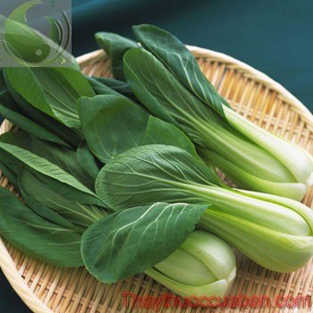

Tên khác
Tên thường gọi: Cải thìa, Cải bẹ trắng, Cải trắng, bạch giới, hồ giới…
Tên khoa học: - Brassica chinensis L
Họ khoa học: thuộc họ Cải - Brassicaceae.
Cây cải thìa
(Mô tả, hình ảnh cây cải thìa, thu hái, chế biến, thành phần hóa học, tác dụng dược lý...)

Mô tả:
Cây thảo sống 1 năm hoặc 2 năm, cao 25-70cm, với 1,5m. Rễ không phình thành củ. Lá ở gốc, to, màu xanh nhạt, gân giữa trắng, nạc; phiến hình bầu dục nhẵn, nguyên hay có răng không rõ, men theo cuống, tới gốc nhưng không tạo thành cánh; các lá ở trên hình giáo. Hoa màu vàng tươi họp thành chùm ở ngọn; hoa dài 1-1,4cm, có 6 nhị. Quả cải dài 4-11cm, có mỏ; hạt tròn, đường kính 1-1,5mm, màu nâu tím. Ra hoa vào mùa xuân. Có nhiều giống trồng hoặc thứ; có loại có lá sít nhau tạo thành bắp dài (var. cylindrica) có loại có lá sít thành bắp tròn (var. cephalata); có loại không bắp có ít lá sát nhau (var. laxa).
Bộ phận dùng: Toàn cây - Herba Brassicae Chinensis.
Phần dùng làm thuốc: thân, hạt, dầu hạt.
Nơi sống và thu hái:
Loài của Trung Quốc, được nhập trồng. Trước đây ở nước ta đã có giống Cải Trung Kiên, Cải Nhật tân và Hà Nội; từ năm 1965-1966, ta nhập các giống của Trung Quốc như Cải trắng Hồ Nam, Cải trắng lá vàng, Cải trắng lá thẫm, Cải trắng tai ngựa, Cải trắng Trạm Giang. Còn có Cải trắng lớn, cuống dài của Nam Kinh, Hàng Châu, Giang tô. Cải đầu vụ đông, Cải lùn, Cải Vân dài vv... Nhiệt độ thích hợp là 10-27oC. Có thể trồng quanh năm, từ đồng bằng đến núi cao, trừ những tháng quá nóng. Loại rau này ít nồng hơn cải bẹ xanh.
Thành phần hóa học:
Cải thìa có nhiều vitamin A, B, C. Lượng vitamin C của nó rất phong phú, đứng vào bậc nhất trong các loại rau. Có nhiều khoáng chất: Canxi, Mangan, Kali, Kẽm, Sắt, Natri, Mg, Selen, Photpho. Năng lượng: 11Kcal. Sau khi phơi khô, hàm lượng vitamin C vẫn còn cao. Chất xơ: 0.7g
Tác dụng dược lý của cải thìa
Thân cải thìa: hoạt huyết, nhuận trường, giải độc, giảm sưng phù, lọc máu, giảm huyết áp, cầm máu.
Dầu hạt cải thìa: giải độc, giảm sưng phù, nhuận trường.
Hạt cải thìa: giúp máu lưu thông, tiêu chỗ sưng phù, nhuận trường.
Làm thuốc thanh nhiệt: Người bị bệnh nội nhiệt nặng thiếu tân dịch, môi khô ráo hay lưỡi sinh cam, chân răng sưng thũng, kẽ răng chảy máu, họng khô cứng… Dùng rau cải thìa nấu canh ăn sẽ có tác dụng thanh hỏa rất tốt.
Vị thuốc cải thìa
(Công dụng, liều dùng, tính vị, quy kinh...)
Tính vị:
Cải thìa: vị cay, ngọt, tính bình.
Hạt cải thìa: vị cay, ngọt, tính bình.
Dầu hạt cải thìa: vị cay, ngọt, tính bình.
Phần để ăn: thân non.
Quy kinh:
Vào kinh phế tỳ
Công dụng, chỉ định và phối hợp:
Cải thìa là thực phẩm dưỡng sinh, ăn vào có thể lợi trường vị, thanh nhiệt, lợi tiểu tiện và ngừa bệnh ngoài da. Cải thìa có tác dụng chống scorbut, tạng khớp và làm tan sưng. Hạt Cải thìa kích thích, làm dễ tiêu, nhuận tràng.
Cây trồng để lấy lá làm rau xanh. Phần bắp phình lên màu trắng, mềm, có thể dùng ăn sống như xà lách hay xào, nấu để ăn. Cũng có thể hầm với các loại thịt hoặc muối dưa. Người ta thường sử dụng Cải thìa:
1. Làm thuốc thanh nhiệt: Người bị bệnh nội nhiệt nặng thiếu tân dịch, môi khô ráo hay lưỡi sinh cam, chân răng sưng thũng, kẽ răng chảy máu, họng khô cứng; thường gọi là bệnh tân dịch không đủ, nội hoả bốc lên; mà nguyên nhân là do thiếu vitamin C. Có thể dùng Cải thìa làm nguồn cung cấp vitamin C sẽ giúp điều trị bệnh này. Nấu canh rau Cải thìa ăn sẽ có tác dụng thanh hoả rất tốt.
2. Nước ép Cải thìa có lợi cho trẻ em trị nội nhiệt: Trẻ em bú sữa bò thường có bệnh nội nhiệt, cũng là thiếu vitamin C. Như khoé mắt có nhử dính, ghèn mắt dính chặt, mi mắt hoặc môi khô hồng, luôn luôn chúm môi lại, thở, ngủ không được, khóc cả đêm. Chỉ cần lấy Cải thìa dầm nát, cho nước sôi để nguội vào lọc lấy nước, sau nấu sôi lên đợi âm ấm, đút cho uống hoặc đổ vào bình sữa cho trẻ em mút. Sau 1 tuần, hiện tượng nội nhiệt mất dần.
3. Trị bệnh hoại huyết: Dùng Cải thìa tươi hoặc khô nấu ăn như rau tươi để đảm bảo dinh dưỡng bình thường và phòng chống bệnh hoại huyết, nhất và đối với người đi các tàu viễn dương xa đất liền nhiều ngày. Người ta biết được điều này từ cách đây 700 năm.
Liều dùng - cách dùng:
- Dùng tươi làm rau ăn hàng ngày
- Dùng khô dạng sắc uống
Ứng dụng lâm sàng của cải thìa
Nước ép cải thìa trị nội nhiệt:
Trẻ em bú sữa bò thường có bệnh nội nhiệt, cũng là do thiếu vitamin C. Chỉ cần lấy cải thìa dầm nát, cho nước sôi để nguội vào lọc lấy nước, sau nấu sôi lên đợi âm ấm, cho uống hoặc đổ vào bình sữa cho trẻ bú. Sau 1 tuần, hiện tượng nội nhiệt mất dần.
Chữa nhiệt miệng:
Rễ cải thìa gọt bỏ vỏ già ở ngoài, thái lát, sao nhỏ lửa vàng cháy, tán thành bột mịn, cho vào lọ nút kín dùng dần. Mỗi ngày lấy bột thuốc bôi vào chỗ bị bệnh 2 – 3 lần. Dùng liền 3 – 5 ngày.
Chữa cảm mạo:
Rễ cải thìa 50g rửa sạch, gọt bỏ vỏ ngoài, thái lát, đường đỏ 30g. Đổ 400ml nước sắc còn 150ml, chia 2 lần uống trong ngày. Uống lúc còn nóng.
Chữa cảm gió: Chọn 1 trong 2 cách sau:
– Lấy 3 cây cải thìa rửa sạch gọt lớp vỏ già, cắt thành miếng, 7 cây hành tây, rửa sạch. Cùng đun thành canh, cho lượng đường vừa đủ, để nóng mà uống sau đắp chăn cho toát mồ hôi.
– Bọc cải thìa 250g, củ cải trắng 60g. Nấu nước cho thêm đường đỏ vừa đủ. Ăn rau uống nước. Mỗi ngày hai, ba lần, dùng liên tục.
Trị ho lâu:
Hai cây cải thìa, rửa sạch, thêm 30g đường phèn, đun nước uống. Ngày 2 – 3 lần.
Chữa đầy bụng, chướng hơi, khó tiêu:
Cải thìa (cả cây) rửa sạch giã vắt lấy nước, hâm cho âm ấm, ngày uống 2 lần trước bữa ăn, mỗi lần 30ml. Dùng liền 3 – 5 ngày.
Trị bệnh hoại huyết:
Dùng cải thìa tươi hoặc khô nấu ăn như rau tươi để đảm bảo dinh dưỡng bình thường và phòng chống bệnh hoại huyết.
Xuất huyết do viêm loét đường tiêu hóa:
Dùng cả cây cải thìa giã vắt lấy nước, hâm cho âm ấm, ngày uống 2 lần trước bữa ăn, mỗi lần một chén (khoảng 30ml) (Tố thực phổ hòa trung thảo dược phương).
Bệnh đái tháo đường:
Cải thìa rửa sạch cắt đoạn, bã đậu phụ lượng bằng rau, bột gạo nếp vừa đủ. Trộn đều, đồ lên ăn.
Thận hư, liệt dương:
Cải thìa tươi 250g, tôm nõn 10g, xào ăn.
Giải độc rượu, lợi tiểu:
Lõi cải thìa tươi cắt đoạn, thêm giấm, muối ăn, dầu mè, tỏi đánh đều. Ăn sống, có thể đun với nước thành canh để ăn.
Chứng giảm bạch cầu:
15g cải thìa; 12,5g lá dâu; 20g lá sen tươi. Cho tất cả nguyên liệu vào lượng nước vừa phải; sáng, tối mỗi buổi dùng 1 lần.
Viêm cơ tim:
40g cải thìa; 40g cà rốt; 25g hoa cúc dại. Cho tất cả nguyên liệu vào sắc nước uống, mỗi ngày 2 lần.
Bệnh viêm cơ tim do nhiễm virus:
40g cải thìa, 30g gừng tươi, 20g bán hạ đã bào chế, 15g phục linh. Cho tất cả nguyên liệu vào sắc nước uống
Sốt rét:
20g hạt cải thìa, 20g lá ngải, có thể thêm 25g rễ, lá cây ngũ trảo( còn gọi là cây chân chim). Cho tất cả nguyên liệu vào sắc nước uống, dùng khi có triệu chứng phát bệnh 2 tiếng đồng hồ.
Giúp hấp thu canxi tốt hơn, tăng cường sức đề kháng:
300g cải thìa, 75g tôm nõn, hành, gừng, nước tương, muối ăn , rượu vang, gia vị. Rửa sạch cải thìa, cắt khúc, cho tôm nõn và gia vị vào xào ăn.
Đại tiện ra máu, huyết trĩ, bị thương bởi đồ kim khí:
Hạt cải thìa, cam thảo đủ dùng. Đem cả 2 nguyên liệu nghiền nát, mỗi lần dùng 9g, đổ nước vào sắc uống.
Tham khảo
So sánh, phân loại
– Cải thìa có 2 loại: loại có hoa và không hoa, đều có thể dùng thay thế cho nhau.
– Cải thìa chứa hàm lượng xơ thực vật lớn, có tác dụng tăng cường nhu động ruột, đẩy nhanh quá trình tiêu hóa, trị táo bón và phòng u xơ đường ruột.
– Cải thìa là loại rau có thể giảm hấp thụ chất béo, đồng thời giảm lượng cholesterol trong máu.
– Cải thìa có tác dụng tăng cường cơ chế thải chất độc trong gan, giải độc và ngừa ung thư.
Kiêng kị
– Người sau khi bị sởi, bị mụn ghẻ, khi bệnh về mắt không nên ăn cải thìa.
– Người bệnh huyết hư tuyệt đối không nên dùng hạt cải thìa.
– Người bị tiêu chảy cẩn thận khi dùng dầu hạt cải thìa.
– Người bị mồ hôi nặng mùi có thể ăn cải thìa để trị bệnh.
– Ăn rau cải thối dễ trúng độc. Khi cất trữ chú ý chống thối.
Tag: cay cai thia, vi thuoc cai thia, cong dung cai thia, Hinh anh cay cai thia, Tac dung cai thia, Thuoc nam
Thaythuoccuaban.com Tổng hợp
*************************